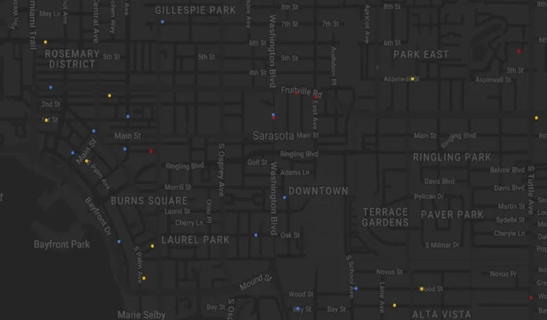

Smartstop. A city’s traffic, managed from one place.
Smartstop is a traffic and logistics startup working to make cities faster, cleaner, safer and smarter. Together we built STIM, the Smart Traffic Infrastructure Management platform: one place where city engineers see data from every part of the city, while Nebula, Smartstop’s AI, adjusts traffic flow in real time.
The only designer on a founding team, owning the product from research to launch: interviews and a 200-person survey, product strategy, end-to-end product and interaction design, and usability testing on every version. Designed and built the website on the front end and managed its content, then took the finished platform to cities.
- Role
- Founding Product Designer
- Built With
- Figma, Axure, React, Supabase, Git
- Worked With
- CEO, CTO, 3 Software Engineers, City of Sarasota Engineers
- Project
- Web App, Website
- Year
- 2023–2024
- more traffic efficiency within three months
- 22%
- faster decision-making, powered by Nebula
- 31%
- tools an engineer needed for a single task
- 12 to 1
- cities signed to put it at key intersections
- 5
The Problem
Cities were facing more congestion every year, with few tools to monitor or control traffic in real time. Before STIM, a traffic engineer could need 10 to 12 different pieces of software to finish a single task. Smartstop needed one way to collect traffic data and optimize signal timing.
Understanding the End User
The City of Sarasota worked with us throughout, and its traffic and civil engineers were the first people we designed for. We interviewed city planners and traffic engineers about their pain points, and studied two user groups: more than 120 traffic engineers and 10 civil engineers. They ranged widely in how comfortable they were with technology, so the platform had to stay as friendly as possible while carrying everything the system can do. Then we surveyed 200 people.
What We Learned, and What We Set Out To Do
Three findings came out of the research, and each one became an objective for the platform.
-
FindingA strong need for accurate data, captured and shown in real time.
ObjectiveA real-time traffic monitoring platform built around data visualization.
-
FindingThe software cities used had complex, unintuitive interfaces.
ObjectiveA simpler experience that’s easier and quicker to use.
-
FindingTheir existing technology limited how far a city could scale.
ObjectiveA platform that scales as more cities and intersections come on.
Three Versions
Every version was tested with engineers, and what they said became the questions for the next one. The first set out to design around a map, on Google Maps. By the third, the platform worked best when it led with the data and let the AI do the heavy lifting with the map in the background. The goal became as little work behind the desk as possible.
v1: A great start, but not the one.
What Testing Said (v1)
Cluttered and difficult to navigate.
Too many data widgets on the dashboard.
Not enough information on system flags.
Questions for v2
How do we show what runs on its own while giving access to manual control?
How do we make data intuitive, and available the moment it’s needed?
How do we make a system with many moving parts feel clean?
v2: We still had some work to do.
What Testing Said (v2)
Solved a lot of pain points, but lacked depth on data and on what the system was doing.
Navigation felt better, but different data displays and key actions needed more room.
Questions for v3
How do we organize data so every task takes fewer steps?
How do we give engineers more control over data and decisions, citywide?
The Final Platform: STIM
The final platform opens like a workspace: tabs for the dashboard, the map, the task manager and hardware, and panels engineers arrange around the work in front of them. Collaboration runs through all of it. Engineers leave notes on data charts, talk to Nebula, and tag engineers, managers and ground crews on an alert, right on the map.
The City, Over Time
The map leads with congestion, not streets. A timeline along the bottom shows the whole day, high to low, and plays it back. Beside it, Nebula’s quick decisions arrive as they happen, with the city’s metrics next to them.

Overall congestion level HighMediumLow
Quick decisions
City metrics
- Traffic flow
- NW
- Avg. velocity
- 51.2
- Avg. throughput
- 15.3
- Congestion rating
- 24%
- Emissions score
- 82
The Morning View
Engineers start the day on a dashboard built around them: what changed since they left, today’s agenda, reminders, and a city overview of throughput, close calls and air quality.
Every Connection, Healthy or Not
Cameras, controllers and sensors across the city in one list, with their health and last update. Any camera opens a live feed, with Nebula’s object detection drawn over the traffic.
Analytics, by Question
Views for the questions engineers actually ask: how traffic is moving, where it’s least safe, and how much an intersection emits. Each one sits next to the map, so every number has a place.
Flows
An intersection’s logic, laid out the way it works on the street: lanes, lights and every phase on one timeline. Engineers adjust it, run it and publish it, with autosave on. Nebula suggests changes, and an engineer applies them in one click.
Intersection flow visualizer
Avg. congestion 42%
Avg. throughput 21
Red per cycle 7.9s
Left quadrant
Immediate suggestions
- Adjust priority direction to NW
- Reduce red light values by 0.2s
Lighting settings
- 01
- 2.4 s
- 1.4 s
- 02
- 2.4 s
- 1.4 s
- 03
- 3.1 s
- 1.4 s
Decisions
- Data first, not map first. Starting from Google Maps felt familiar to engineers, but it kept them doing the work. Leading with the data, and letting Nebula run the map in the background, took most of that work off their desks.
- The AI does the heavy lifting, in the open. Nebula adjusts traffic on its own, and every decision it makes shows up in a log, with suggestions an engineer applies in one click. Engineers keep the final say without doing the routine work.
- Collaboration everywhere, not in a tab. 77% of the people surveyed put collaboration first, so notes, tags and conversations with the AI live on the charts and the map, right where the problem is.
- Modular, city by city. Every city is different, so the platform is built from modular pieces that can be as simple or as deep as a city needs. It meant more to design and maintain, and it’s the reason the platform could scale.
A National Impact
Within three months, STIM outperformed the existing competitor, Synchro Green: a 22% increase in traffic efficiency and a 31% improvement in decision-making speed, powered by Nebula. City planners reported less congestion and more control over traffic patterns and emergency response.
Outcome
After development, outreach with the CEO reached more than twelve cities across the country and secured agreements with five municipalities to put STIM at key intersections. Sarasota secured a federal grant for new hardware and its installation, and invested in the platform itself. Two other cities invested alongside Sarasota, bringing city investment to $200K, so the hardware and the software arrived together. Smartstop and STIM were later acquired.
The Website
The website came first at Smartstop. It had to show off the company’s technology while staying easy to follow and interactive. Each section was designed and tested on its own, then assembled into one path: the promise, the proof, the products and a way to get in touch, without overloading anyone.